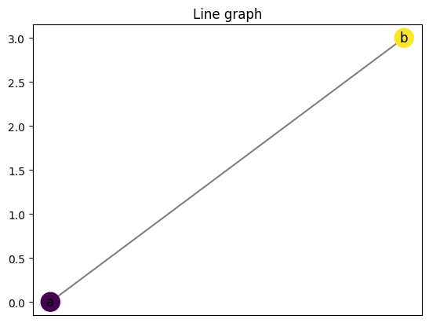
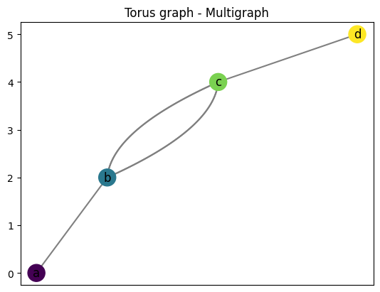
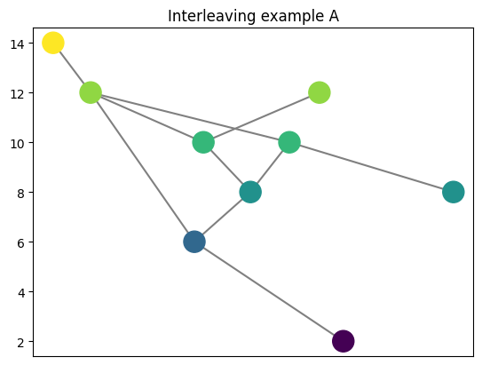

5. Example graphs
In this notebook, we show the available example graphs from the data module.
5.1. Reeb graphs
These cells generate the examples from the example Reeb graphs module.
[1]:
import cereeberus.data.ex_reebgraphs as ex_rg
import matplotlib.pyplot as plt
[2]:
# The torus graph allows for choices of function values for the four vertices
R = ex_rg.line(a = 0, b = 3)
R.draw()
plt.title('Line graph')
plt.savefig('../images/line.png', bbox_inches = 'tight')

[3]:
# The torus graph allows for choices of function values for the four vertices
R = ex_rg.torus(a = 0, b = 2, c = 4, d = 5,
multigraph = True, seed = 6)
R.draw(cpx = 3)
plt.title('Torus graph - Multigraph')
# plt.savefig('../images/torus.png', bbox_inches = 'tight')
[3]:
Text(0.5, 1.0, 'Torus graph - Multigraph')

[4]:
# The torus graph allows for choices of function values for the four vertices
R = ex_rg.torus(a = 0, b = 1, c = 4, d = 5,
multigraph = False, seed = 6)
R.draw(cpx = 3, with_labels = False)
plt.title('Torus graph - Non-multigraph')
plt.savefig('../images/torus-extraverts.png', bbox_inches = 'tight')
[5]:
R = ex_rg.dancing_man(seed = 0)
R.draw(with_labels = False)
plt.title('Dancing Man')
# plt.savefig('../images/dancing_man.png', bbox_inches = 'tight')
[5]:
Text(0.5, 1.0, 'Dancing Man')

[6]:
R = ex_rg.juggling_man(seed = 0)
R.draw(with_labels = False)
plt.title('Juggling Man')
# plt.savefig('../images/juggling_man.png', bbox_inches = 'tight')
[6]:
Text(0.5, 1.0, 'Juggling Man')
[7]:
R = ex_rg.simple_loops(seed = 5)
R.draw(with_labels = False, cpx= 1.1)
plt.title('Simple loops')
# plt.savefig('../images/simple_loops.png', bbox_inches = 'tight')
[7]:
Text(0.5, 1.0, 'Simple loops')
[8]:
R = ex_rg.interleave_example_A(seed = 5)
R.draw(with_labels = False, cpx= 1.1)
plt.title('Interleaving example A')
# plt.savefig('../images/interleave_example_A.png', bbox_inches = 'tight')
[8]:
Text(0.5, 1.0, 'Interleaving example A')

[9]:
R = ex_rg.interleave_example_B(seed = 5)
R.draw(with_labels = False, cpx= 1.1)
plt.title('Interleaving example B')
# plt.savefig('../images/interleave_example_B.png', bbox_inches = 'tight')
[9]:
Text(0.5, 1.0, 'Interleaving example B')
5.2. Mapper Graphs
These cells generate the examples from the example mapper graphs module.
[10]:
import cereeberus.data.ex_mappergraphs as ex_mg
import matplotlib.pyplot as plt
[18]:
# The line graph allows for choices of function values for the bottom and top vertices
MG = ex_mg.line(a = 0, b = 3)
MG.draw(with_labels = False)
plt.title('Line graph - Mapper')
# plt.savefig('../images/line_mapper.png', bbox_inches = 'tight')
[12]:
# Note that like the Reeb graph version, the torus mapper graph allows for choices of integer function values for the four vertices
MG = ex_mg.torus(a = 0, b = 1, c = 4, d = 6, delta = .2, seed = 5)
print(f"Delta value is: {MG.delta}")
MG.draw()
plt.title('Torus graph mapper')
# plt.savefig('torus_mapper.png', bbox_inches = 'tight')
Delta value is: 0.2
[12]:
Text(0.5, 1.0, 'Torus graph mapper')
[13]:
MG = ex_mg.dancing_man(seed = 2)
print(f"Delta value is: {MG.delta}")
MG.draw(with_labels = False)
plt.title('Dancing Man Mapper')
# plt.savefig('dancing_man_mapper.png', bbox_inches = 'tight')
Delta value is: 0.1
[13]:
Text(0.5, 1.0, 'Dancing Man Mapper')
[14]:
MG = ex_mg.juggling_man(seed = 0)
print(f"Delta value is: {MG.delta}")
MG.draw(with_labels = False)
plt.title('Juggling Man Mapper')
# plt.savefig('juggling_man_mapper.png', bbox_inches = 'tight')
Delta value is: 0.1
[14]:
Text(0.5, 1.0, 'Juggling Man Mapper')
[15]:
MG = ex_mg.simple_loops(seed = 5)
print(f"Delta value is: {MG.delta}")
MG.draw(with_labels = False, cpx= 1.1)
plt.title('Simple loops mapper')
# plt.savefig('simple_loops_mapper.png', bbox_inches = 'tight')
Delta value is: 1
[15]:
Text(0.5, 1.0, 'Simple loops mapper')
[16]:
MG = ex_mg.interleave_example_A(seed = 5)
print(f"Delta value is: {MG.delta}")
MG.draw(with_labels = False)
plt.title('Interleaving example A mapper')
# plt.savefig('interleave_example_A_mapper.png', bbox_inches = 'tight')
Delta value is: 1
[16]:
Text(0.5, 1.0, 'Interleaving example A mapper')
[17]:
MG = ex_mg.interleave_example_B(seed = 5)
print(f"Delta value is: {MG.delta}")
MG.draw(with_labels = False)
plt.title('Interleaving example B mapper')
# plt.savefig('interleave_example_B_mapper.png', bbox_inches = 'tight')
Delta value is: 1
[17]:
Text(0.5, 1.0, 'Interleaving example B mapper')
5.3. Merge Trees
TODO
[ ]:
5.4. Embedded Graphs
TODO
[ ]: